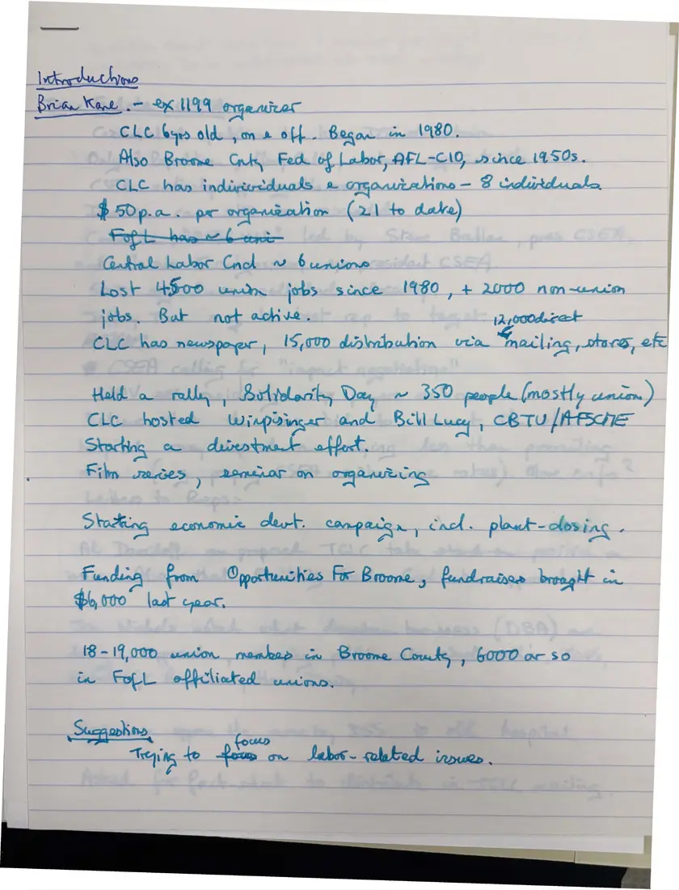
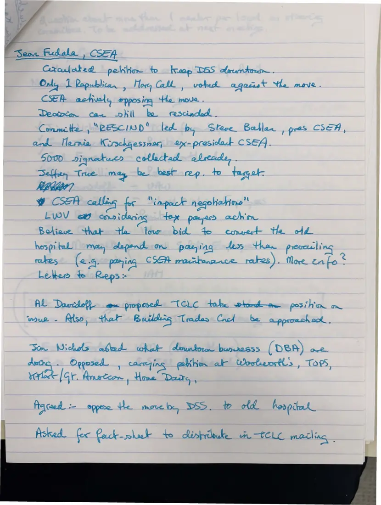
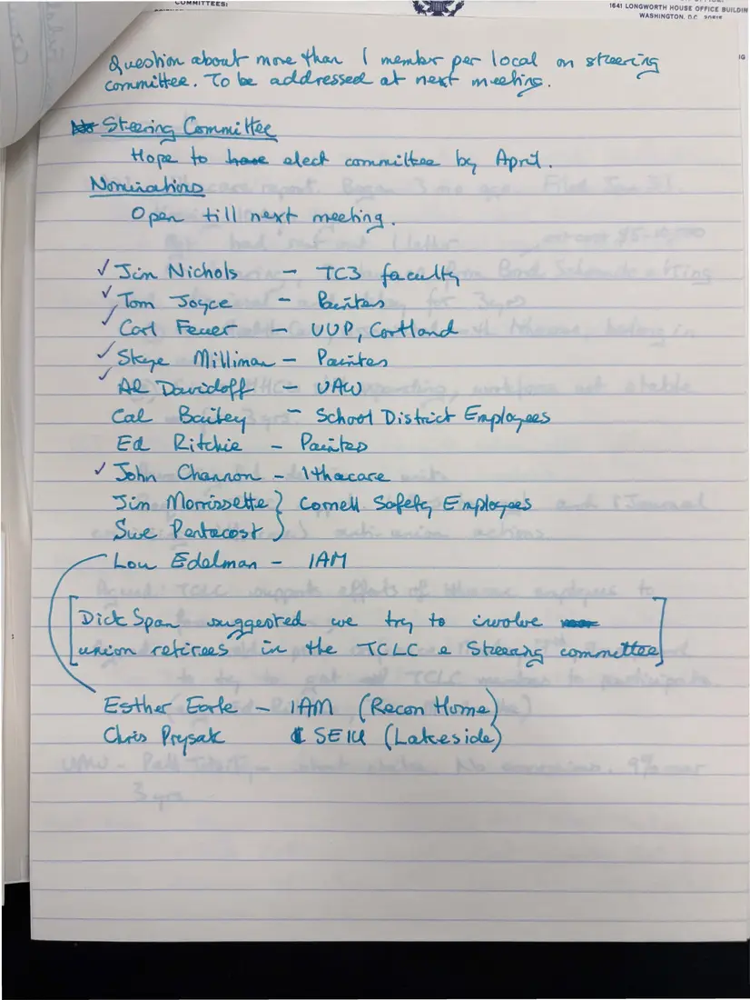
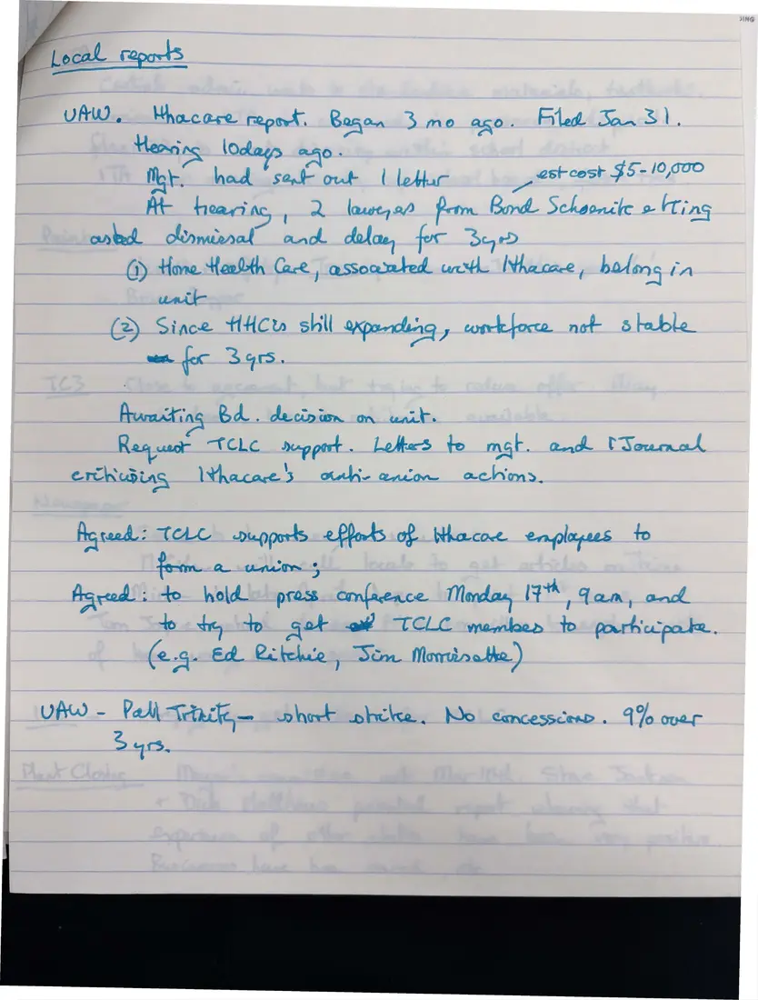
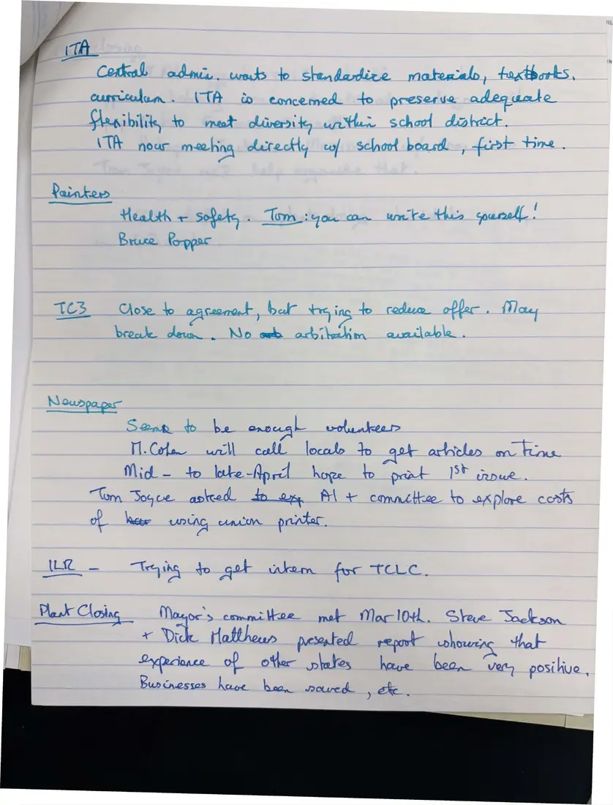
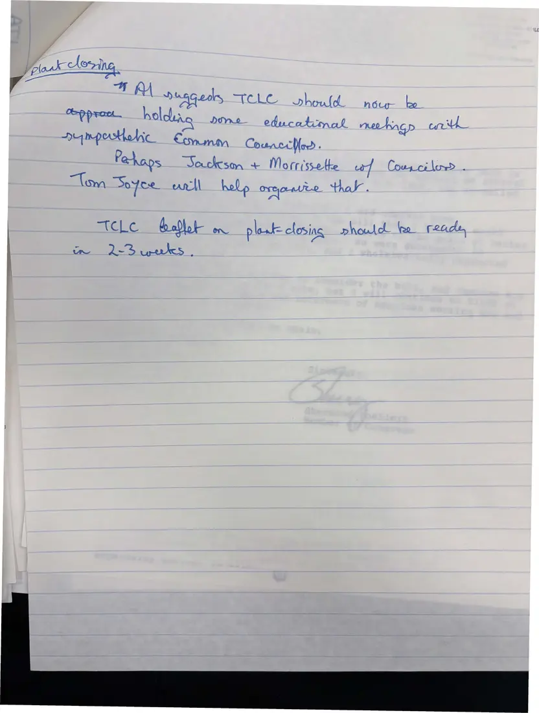

Labor Archive Labor Coalition records tclc-0179
Notes, 6 pages
Handwritten notes from 1986 meetings
[March 1986]Date inferred
Notes on a talk by Brian Kane of the Binghamton labor council, nominations for the steering committee, and local reports: UAW, CSEA's petition to keep county social services downtown, the Ithaca Teachers Association, the Painters, TC3, plans for a labor newspaper, and the plant closing campaign.
Download or cite this item
Download
Full-resolution master photographs are stored offline. Request a copy .
Cite this item
[Unknown note-taker], Tompkins-Cortland Labor Coalition. “Handwritten notes from 1986 meetings.” [March 1986]. Tompkins-Cortland Labor Coalition records, collection 6185, Kheel Center for Labor-Management Documentation and Archives, Cornell University Library. Digital copy, Labor Archive, adolfhoromero.com, item tclc-0179, https://adolfhoromero.com/archive/tclc/items/tclc-0179/.
Copy citation
Copy link
Permanent link: adolfhoromero.com/archive/tclc/items/tclc-0179/
Details
Identifier tclc-0179
Created by [Unknown note-taker], Tompkins-Cortland Labor Coalition
Date [March 1986] (inferred)
Type Notes
Pages 6
Place Tompkins and Cortland counties, New York
Language English
Original Tompkins-Cortland Labor Coalition records, collection 6185, Kheel Center for Labor-Management Documentation and Archives, Cornell University Library
Rights Copyright not evaluated. Copyright in these documents may belong to the organizations and people who created them. They are shared here for study, teaching, and organizing education. Rights statement .
Where each page came from
“TCLC Box 1,” “TCLC Box 3-6,” and “TCLC Box 5” are names of the digitization folders these photographs came from. They are project labels and do not describe where a document sits in the Kheel Center's boxes.
Page 1: “box 3-6.pdf”, page 109 (TCLC Box 3-6 (Library Scans)) Page 2: “box 3-6.pdf”, page 110 (TCLC Box 3-6 (Library Scans)) Page 3: “box 3-6.pdf”, page 111 (TCLC Box 3-6 (Library Scans)) Page 4: “box 3-6.pdf”, page 112 (TCLC Box 3-6 (Library Scans)) Page 5: “box 3-6.pdf”, page 113 (TCLC Box 3-6 (Library Scans)) Page 6: “box 3-6.pdf”, page 114 (TCLC Box 3-6 (Library Scans)) Previous item Next item
Pages

(open zoom view) Page 1 of 6 Zoom in on page 1 of 6 Open image of page 1 of 6 (1527×2000)
This page is handwritten. Machine reading does not work on handwriting, and no one has transcribed it by hand yet.

(open zoom view) Page 2 of 6 Zoom in on page 2 of 6 Open image of page 2 of 6 (1508×2000)
This page is handwritten. Machine reading does not work on handwriting, and no one has transcribed it by hand yet.

(open zoom view) Page 3 of 6 Zoom in on page 3 of 6 Open image of page 3 of 6 (1502×2000)
This page is handwritten. Machine reading does not work on handwriting, and no one has transcribed it by hand yet.

(open zoom view) Page 4 of 6 Zoom in on page 4 of 6 Open image of page 4 of 6 (1517×2000)
This page is handwritten. Machine reading does not work on handwriting, and no one has transcribed it by hand yet.

(open zoom view) Page 5 of 6 Zoom in on page 5 of 6 Open image of page 5 of 6 (1523×2000)
This page is handwritten. Machine reading does not work on handwriting, and no one has transcribed it by hand yet.

(open zoom view) Page 6 of 6 Zoom in on page 6 of 6 Open image of page 6 of 6 (1513×2000)
This page is handwritten. Machine reading does not work on handwriting, and no one has transcribed it by hand yet.
Handwritten notes from 1986 meetings
Previous page Next page
− +
Rotate Reset view
Open image Close
Drag to move. Scroll, pinch, or double-click to zoom. On the keyboard, + and − zoom, arrow keys move, Page Up and Page Down change pages, and Esc closes.